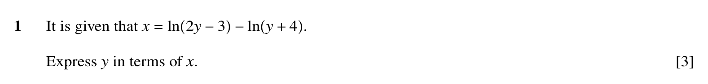
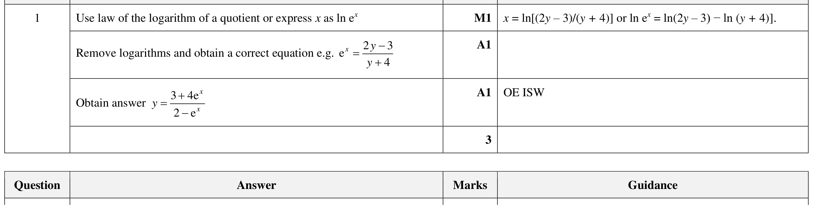

Paper 32spring23 Q1
Logarithmic and Exponential Functions
Self-marked exam work is useful practice evidence, but it is weaker than checked Skill Check evidence. It does not award mastery by itself.

Need a first step?
Underline what the question asks for, write the formula or method you recognise, then do one line of working before checking the mark scheme.
Show mark scheme image
